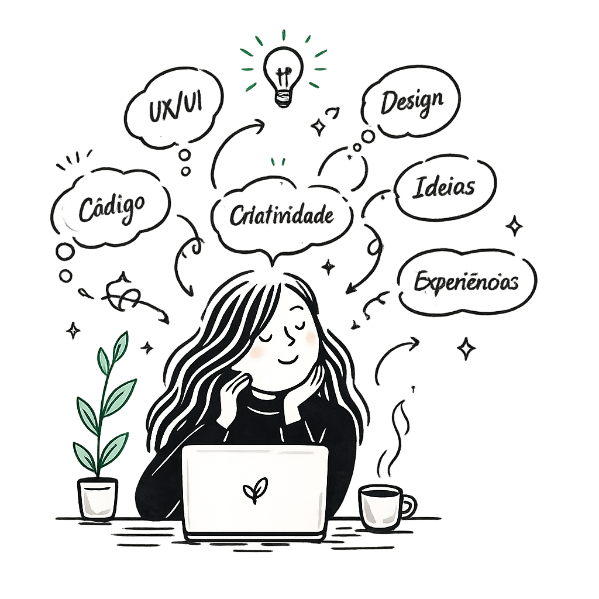

Propósito
Dar vida a ideias através do design e do desenvolvimento, criando produtos digitais que façam sentido para quem os utiliza.
Manual visual da marca
Este manual reúne os princÃpios, elementos visuais e decisões que transformam minha identidade em uma experiência digital consistente.

01 — Brand Concept
Tudo começa com uma ideia.
Ela pode nascer de uma pergunta, de uma curiosidade, da observação de um problema ou simplesmente da vontade de criar algo novo.
Meu processo transforma essas ideias em experiências digitais através da conexão entre pesquisa, design e desenvolvimento.
02 — Propósito · Missão · Visão
Dar vida a ideias através do design e do desenvolvimento, criando produtos digitais que façam sentido para quem os utiliza.
Criar produtos digitais que resolvam problemas reais através de interfaces claras, humanas e bem pensadas.
Conectar design, tecnologia e experiência do usuário na construção de produtos digitais com propósito.
03 — Positioning & Personality
Front-End Developer em formação · Explorando Product Design e UX/UI.
Meu trabalho não começa no código.
Começa entendendo o problema.
Criativa, mas não confusa.
Profissional, mas não fria.
Didática, mas não técnica demais.
Organizada, mas não robótica.
04 — Creative Direction
Uma identidade minimalista, mas não fria. Criativa, mas organizada. Moderna, mas humana. Elegante, mas acessÃvel.
Brand→Visual Language→Design System
Visual Language
A ideia começa aberta, curiosa e ainda sem forma definitiva.
Linhas e relações organizam o percurso sem apagar a espontaneidade.
Hierarquia, grid e componentes transformam intenção em interface.
Gramática visual
05 — Foundations
A identidade deixa de ser apenas visual quando começa a se transformar em regras reutilizáveis.
05.1 / Marca
Usar somente as versões existentes, preservando proporção e área de respiro.
05.2 / Tokens cromáticos
Uma paleta contida, criada para equilibrar expressão humana e estrutura digital.
--color-bg · #F7FAF8Base clara da página.
--color-surface · #FFFFFFSuperfÃcies em primeiro plano.
--color-title · #1A1F1CTÃtulos e contraste principal.
--color-text · #5B6460Leitura longa e apoio.
--color-primary · #2E8B57Assinatura, conexão e ação.
--color-primary-dark · #1F6F4AÊnfase com maior contraste.
--color-border · #E4E7E5Divisão sutil e estrutura.
--color-primary-light · #D8F3E5Destaque suave e contexto.
--ds-bg · #0F1115Base escura da página.
--ds-surface · #171B22SuperfÃcies em primeiro plano.
--ds-title · #F5F7F6Leitura e hierarquia principal.
--ds-text · #B8C0BCInformação complementar.
--ds-primary · #3DDC84Assinatura luminosa e ação.
--ds-primary-dark · #74E9A7Hover e texto verde legÃvel.
--ds-border · #30363DEstrutura sem excesso de contraste.
Ideias ganhando vida, crescimento, criação e ação. É a assinatura cromática da marca.
Espaço para pensar, clareza e respiro. O vazio também constrói a composição editorial.
Estrutura, contraste e tecnologia. Equilibram o gesto artesanal com o universo digital.
Descoberta, destaque suave e pensamento em formação. Apoia sem competir com o verde principal.
O verde funciona como assinatura, não como preenchimento.Ele orienta, destaca, conecta e cria reconhecimento — sem precisar aparecer em tudo.
05.3 / Escala tipográfica
Fonte principal · estrutura digital
Escala funcional
1rem · 400 · 1.65.875rem · 400.75rem · tracking.75rem · 700Fonte expressiva · intervenção humana
Caveat · detalhes manuscritosUsar em pensamentos, anotações e comentários pontuais — nunca como fonte de interface.
05.4 / Ritmo e estrutura
Organização visÃvel por meio de distância, alinhamento e proporção.
1 / 42 / 83 / 124 / 165 / 246 / 327 / 488 / 6412 colunasgutters · 16–32pxcolapso progressivo
05.5 / Forma e profundidade
Tokens que materializam superfÃcie, limite e profundidade.
05.6 / Comportamento
Motion apoia a ideia, não compete com ela.
prefers-reduced-motion06 — Assets
Somente elementos oficiais aparecem aqui. Referências externas permanecem fora deste catálogo.
Brand Assets
Arquivos oficiais prontos para uso. Cada famÃlia possui uma função especÃfica dentro da identidade.
Identidade visual em uso.Apoiam a atmosfera sem competir com conteúdo ou legibilidade.
Recursos editoriais que complementam, conectam e contextualizam a narrativa da marca.
Elementos gráficos complementares utilizados para criar conexão, direção e personalidade.
Elementos utilizados para organizar passagens, trajetórias e transições entre conteúdos.
Molduras utilizadas para contextualizar imagens, projetos, referências e momentos de storytelling.
07 — Components
Os componentes deixam de ser peças isoladas quando passam a trabalhar em composição.
07.3
Introduzem assunto, hierarquia e intenção antes do conteúdo.
Pesquisa, decisões e desenvolvimento aparecem como partes do mesmo percurso.
Regra: label contextual, tÃtulo direto e apoio que acrescente informação.
07.4
O componente reúne imagem real, contexto, tecnologias e um próximo passo claro.
.webp)
Uma pequena pausa digital para lembrar que continuar também faz parte do processo.
Ver projeto →Regra: a imagem apresenta o projeto; texto e tags explicam por que ele importa.
08 — Patterns
Soluções recorrentes de layout, não componentes isolados.
O conteúdo desenvolve o raciocÃnio com ritmo e espaço.
anotação humana, com moderação
Imagem e conteúdo constroem a mesma narrativa.
Contexto e desafio abrem a narrativa do projeto.
09 — Applications
Front-End Developer em formação
Transformo ideias em experiências digitais unindo criatividade, design e desenvolvimento.

moldura.png.Narrativa, fotografia humana e intervenção gráfica.
Cor, tipografia, spacing e contraste estruturam o layout.
Ação principal e link editorial preservam familiaridade.
O sistema deixa de ser catálogo quando resolve uma composição real.
10 — Da marca ao produto
Marca, regras e componentes não são etapas isoladas. Cada decisão prepara a próxima até o sistema se tornar algo claro, útil e reconhecÃvel para quem usa.
Ideias ganham vida aqui.